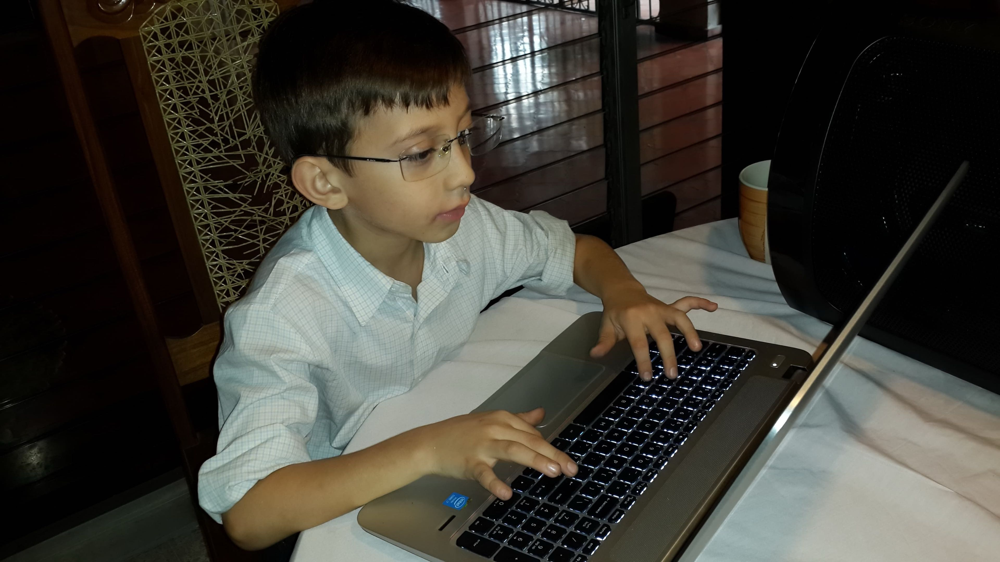
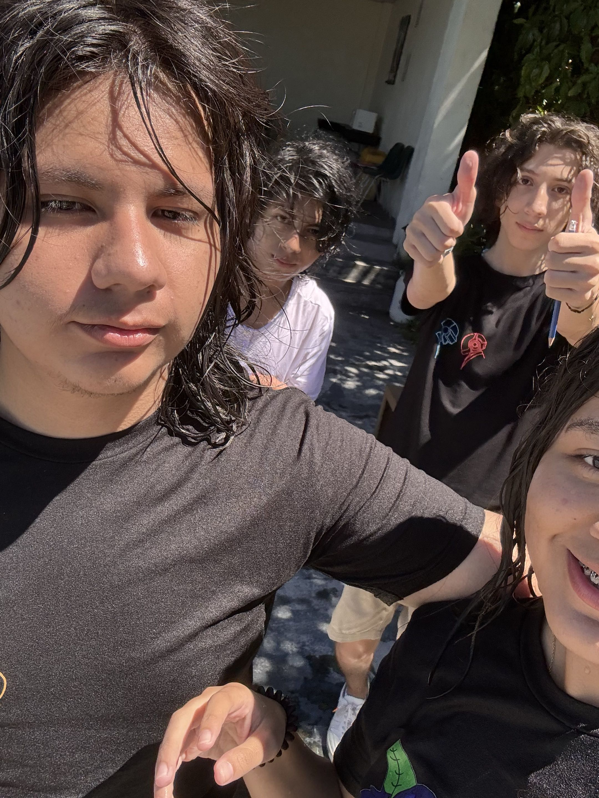
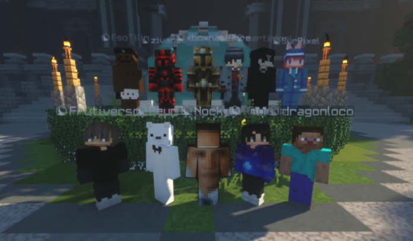
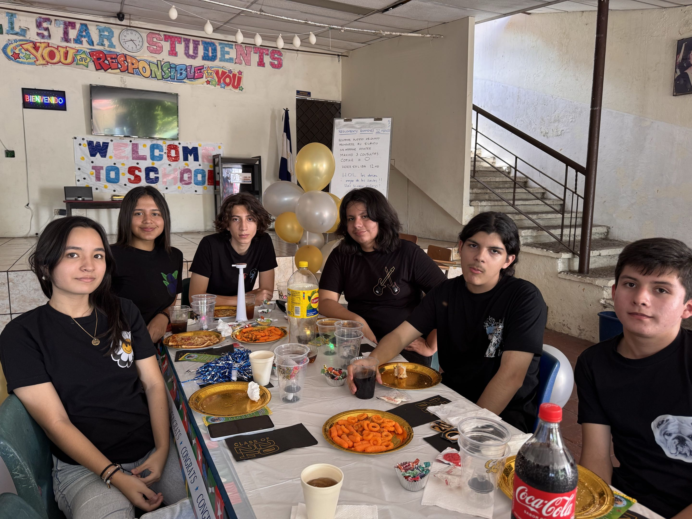
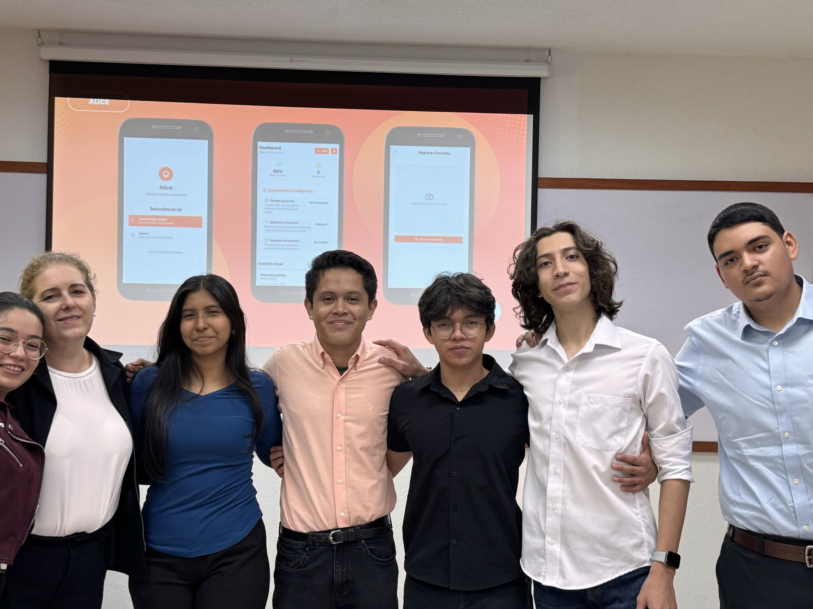
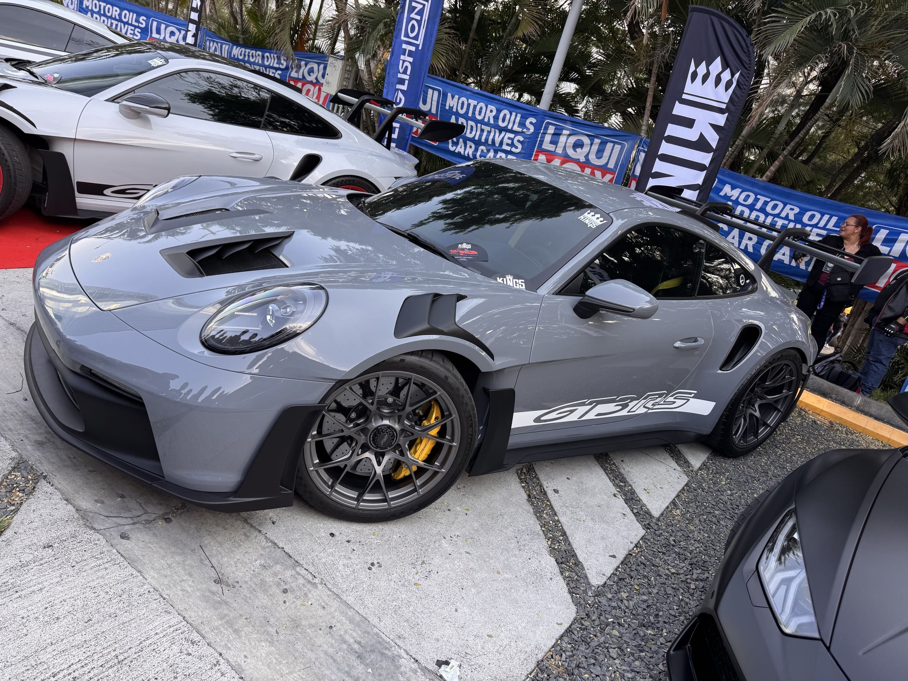
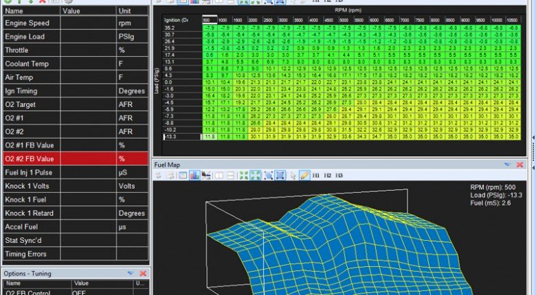
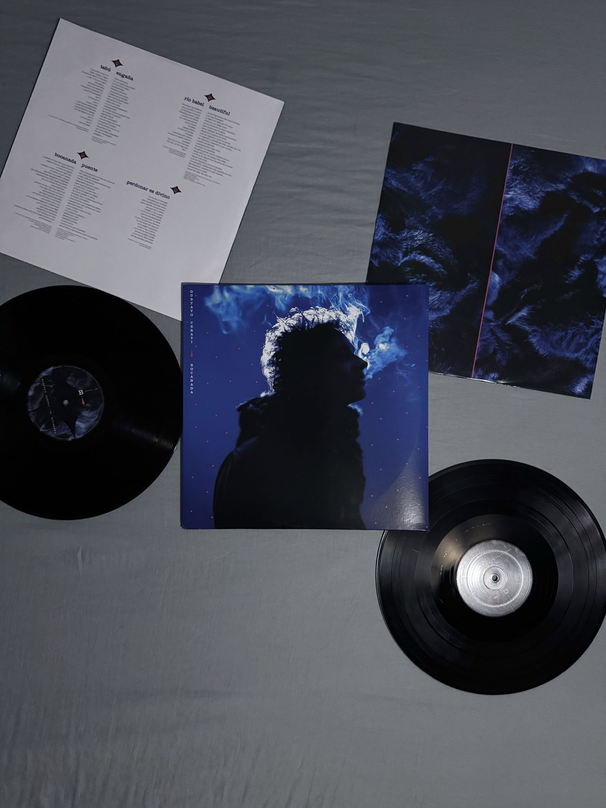
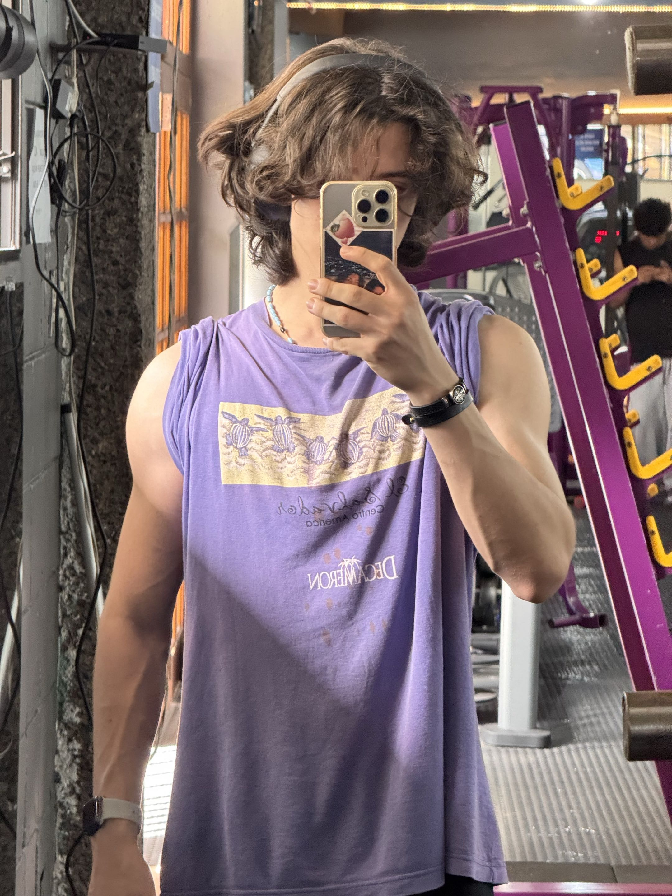

Infancia y vida temprana
Nací el 8 de noviembre de 2006. No tengo hermanos ni primos, por lo que soy el único niño de toda la familia. De pequeño siempre fui bastante curioso e inquieto, algo que, hasta cierto punto, llevó a que me catalogaran como "problemático". Estudié en un pequeño kínder llamado "Little to Big", que completé a muy temprana edad. Después de algunos acontecimientos que ahora recuerdo con gracia, ingresé a un pequeño colegio ubicado en la colonia San Benito llamado "House of Learning".

En "House of Learning" completé kínder y continué estudiando hasta graduarme de bachiller. Gran parte de mi infancia y adolescencia estuvo ligada a ese colegio, por lo que muchos de mis recuerdos de esas etapas vienen de las experiencias que tuve allí.
Nunca llegué a interesarme demasiado por las profesiones que ejercían mis padres. Por lo que tengo memoria, mi primer "cuando sea grande quiero ser..." fue electricista. Desde pequeño me ha fascinado la ingeniería detrás de los juguetes y aparatos electrónicos, muchos de los cuales terminaba desarmando simplemente para descubrir cómo eran por dentro. Con el tiempo, ese "quiero ser electricista" cambió por "quiero estudiar Ingeniería Eléctrica" y, posteriormente, apareció algo que todavía mantengo como una de mis principales metas: el emprendimiento.
Vida como estudiante
Como mencioné anteriormente, llegué desde kínder al mismo colegio del que años después me graduaría. Sinceramente, podría pasar horas explicando todo lo que viví allí, porque fue una etapa maravillosa y llena de recuerdos. Podría catalogar mis primeros años como una experiencia bastante común, hasta que llegué a séptimo grado, cuando la pandemia cambió por completo nuestra forma de estudiar. La cuarentena nos obligó a permanecer en casa y todas las clases presenciales fueron suspendidas.

Durante la pandemia, todo fue bastante aburrido desde el punto de vista académico. Las clases no eran particularmente buenas y todos terminamos distanciándonos bastante. Sin embargo, también fue una etapa en la que conecté con muchas personas a través de internet. Varias de ellas me motivaron a probar cosas nuevas, mejorar ciertos aspectos de mí mismo y buscar ser mejor cada día, lo que terminó representando un gran cambio en mi vida. Al mismo tiempo, aumentó mi interés por las computadoras, inicialmente por los videojuegos, y poco a poco esa curiosidad terminó formando una parte importante del interés por mi carrera actual.

Después de la pandemia llegó el bachillerato, una etapa llena de recuerdos. Mi colegio era bastante pequeño; de hecho, mi promoción estuvo formada únicamente por seis estudiantes. Eso permitió que llegara a conectar muchísimo con las personas que decidieron quedarse en el colegio, con quienes llegaron posteriormente e incluso con estudiantes que no eran de mi mismo grado.

Finalmente, llegó mi etapa universitaria. Ingresé a la ESEN interesado en la carrera de Ingeniería de Software y Negocios Digitales, ya que combinaba dos áreas que siempre me habían llamado la atención: el emprendimiento y la ingeniería relacionada con la computación. La universidad representó un cambio bastante grande respecto al colegio, pues pasé de estar acostumbrado a un ambiente pequeño a encontrarme con salones llenos, muchas dinámicas diferentes y materias que ya se sentían mucho más "en serio". Fue, y continúa siendo, una etapa completamente diferente a todo lo que había experimentado anteriormente.

Gustos
Esta es una parte de mi vida que, a día de hoy, sigo alimentando con nuevos descubrimientos que constantemente cambian mi perspectiva sobre las cosas que disfruto. Sin embargo, si tuviera que filtrar mis gustos entre hobbies y pasiones, probablemente el que más debería remarcar sería el automovilismo. Desde pequeño me han encantado los autos e incluso tengo fotografías de cuando iba a eventos relacionados con automóviles a los 10 u 11 años. Este gusto también ha ido evolucionando conmigo.

Comencé enamorándome de carros que me hubiera gustado que tuviera mi familia —o que probablemente yo quería tener a los 11 años—. Después, mi interés pasó hacia los carros que me gustaría tener personalmente en el futuro. Finalmente, llegué a mi etapa más reciente: mi fascinación por el desempeño automotriz, los vehículos diseñados para pista, circuitos como Nürburgring en Alemania, el mundo del tuning y la ingeniería automotriz.

Otro de mis grandes gustos es la música, especialmente por todo lo que una canción puede llegar a representar y por la combinación entre su estética visual y sonora. Me encanta producir música en mi cabeza y, aun así, nunca me he detenido realmente a aprender cómo plasmar esas ideas en un programa de producción musical. Siento que, de momento, no estoy para eso, aunque disfruto mucho imaginar una estética visual para diferentes canciones y, por supuesto, crear mentalmente mis propios conceptos musicales.

Por último, uno de mis gustos más recientes, y que poco a poco se ha convertido también en parte de mi estilo de vida, es el gimnasio y el levantamiento de pesas. Llevo aproximadamente un año y medio desde que comencé a entrenar en serio y, últimamente, me he enfocado bastante en aumentar mi fuerza. Por eso, una de mis posibles metas a futuro es llegar a competir en powerlifting, aunque todavía no estoy completamente seguro de querer seguir ese camino. De lo que sí estoy seguro es de que quiero seguir trabajando hasta llegar a dominar algunas de las habilidades más difíciles de la calistenia.
